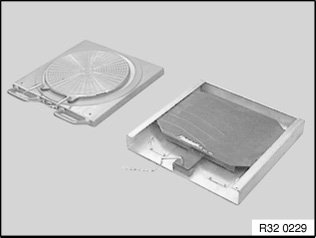
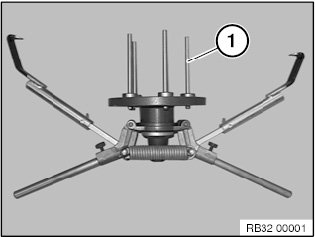
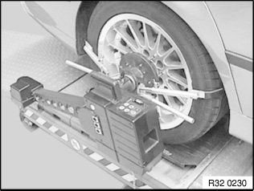
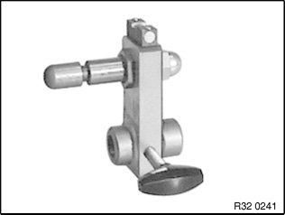
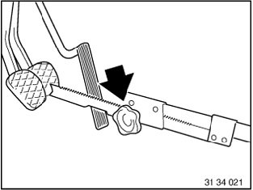

32 00 155 KDS Chassis/Wheel Alignment Check With Ride Height Measurement Without Vehicle Load
32 00 155 KDS chassis/wheel alignment check with ride height measurement without vehicle loadNote:
^ Read and comply with General information and definitions.
^ Read and comply with General chassis definition.
^ Check compliance with test conditions, repair vehicle if necessary.

^ If necessary, prepare vehicle hoist.
^ Drive vehicle onto vehicle hoist.
Note: The front and rear wheels must be positioned centrally on the rotary and sliding plates.
^ Remove locking pins from both rotary and sliding plates.

Important!
Only use quick-clamping holders with polycontrol pins (1).
Other quick-clamping holders are not permitted because of the inaccuracy of measurement!

^ Attach quick-clamping holder to vehicle and remove clamping levers in area of front wheels
^ Attach pickup to quick-clamping holder, align using bubble level and connect to turntables

^ If necessary, attach spoiler adapter.
^ If necessary, switch on chassis alignment system.
^ Enter customer and vehicle data
^ Identify chassis version and select vehicle
^ Enter tire inflation pressure and tread depth
^ Measure and enter vehicle ride height

^ Install brake tensioner.
E81, E82, E87, E88, E90, E91, E92, E93:
Important!
Risk of damage!
In order to avoid damaging the front side panel during the "Max. steering angle" drive-in routine, make sure the pickups are removed from the quick clamping holders/quick-clamping units during output and input alignment. In the process do not detach the connecting cable from the pickups or the rotary plates.
Note:
After the drive-in routine, reconnect the pickups to the quick-clamping holders/quick-clamping units, align using the bubble levels and secure in place.
^ Perform input measurement in accordance with equipment manufacturer's instructions.
^ Compare nominal values with actual values.
Only in event of customer complaint (e.g. poor driving performance):
Important!
Do not remove screws/bolts (front axle support to engine support or body)!
Slacken all screws/bolts (front axle support to engine support or body) and then retighten to specified torque.
Refer to Lowering front axle support.
If necessary, adjust front axle and rear axle
Important!
Only on vehicles with Active Cruise Control:
Because the driving axis is the reference for ACC alignment, it is necessary after an alignment of the rear axle, which alters the driving axis, to check the alignment of the ACC sensor as well!
It is not necessary to check the ACC sensor after only one adjustment of the front axle!
^ Perform output measurement in accordance with equipment manufacturer's instructions.
^ Save and print out test record.
^ Carry out steering angle sensor adjustment/alignment for active steering
^ Insert locking pins into both rotary and sliding plates
^ Remove chassis/wheel alignment system
^ Drive vehicle off vehicle hoist
^ If necessary, carry out alignment of ACC sensor